Convolutional Neural Networks
Table of Contents
继续突击这门 课程. CNN是DNN的一种特殊实现，专门解决输入是图像这种带有局部空间性质的半结构化的数据。这门课程介绍了CNN的基本原理，以及几种基本实现，然后介绍了CNN的几种应用：物体检测，脸部识别，以及 风格迁移。
说实话课程难度还是比较高的，到后面几个weeks的作业光是写graph都已经焦头烂额了，更别说如果作业要求从头实现BP的话会怎么样。作业开始逐渐依赖于keras和tensorflow这种high level framework了，更多地强调如何构建起这些网络以及如何运行。
1 CNN的卷积基础
filter应该是怎么样的？假设input image shape是(64, 64, 3)的话，那么filter的最后一个维度也必须是3. 如果filter size是5的话， 那么一个filter shape应该就是(5, 5, 3) .
在CNN里面的convolution, 其实准确地说应该是cross-correlation，不过在CNN的文章里面大家都是这么使用的，实际上效果的确和convolution一样。
一个filter(5,5,3)应用在input(64, 64, 3)上的话，假设padding=0, stride=1, 首先得到的结果是(60, 60, 3), 然后每个像素上的channel value叠加起来，类似 `np.sum(input, axis = -1)`. 最终一个filter下去，结果是(60, 60, 1). 如果有F个filter的话，那么output就是(60, 60, F)
def conv_single_step(a_slice_prev, W, b):
"""
Apply one filter defined by parameters W on a single slice (a_slice_prev) of the output activation
of the previous layer.
Arguments:
a_slice_prev -- slice of input data of shape (f, f, n_C_prev)
W -- Weight parameters contained in a window - matrix of shape (f, f, n_C_prev)
b -- Bias parameters contained in a window - matrix of shape (1, 1, 1)
Returns:
Z -- a scalar value, result of convolving the sliding window (W, b) on a slice x of the input data
"""
### START CODE HERE ### (≈ 2 lines of code)
# Element-wise product between a_slice and W. Do not add the bias yet.
s = W * a_slice_prev
# Sum over all entries of the volume s.
Z = np.sum(s)
# Add bias b to Z. Cast b to a float() so that Z results in a scalar value.
Z = Z + float(b)
### END CODE HERE ###
return Z
为什么要使用卷积呢？主要还是和图像这种数据性质有关，图像这种半结构化数据在局部空间上呈现相似性。最终带来的好处有两个：1. 参数共享 2. 稀疏连接。 每层layer weight数量，只是和filter相关。b比如filter大小(5, 5, 16), 一种64个filters的话，参数也就是(400 + 1) * 64。
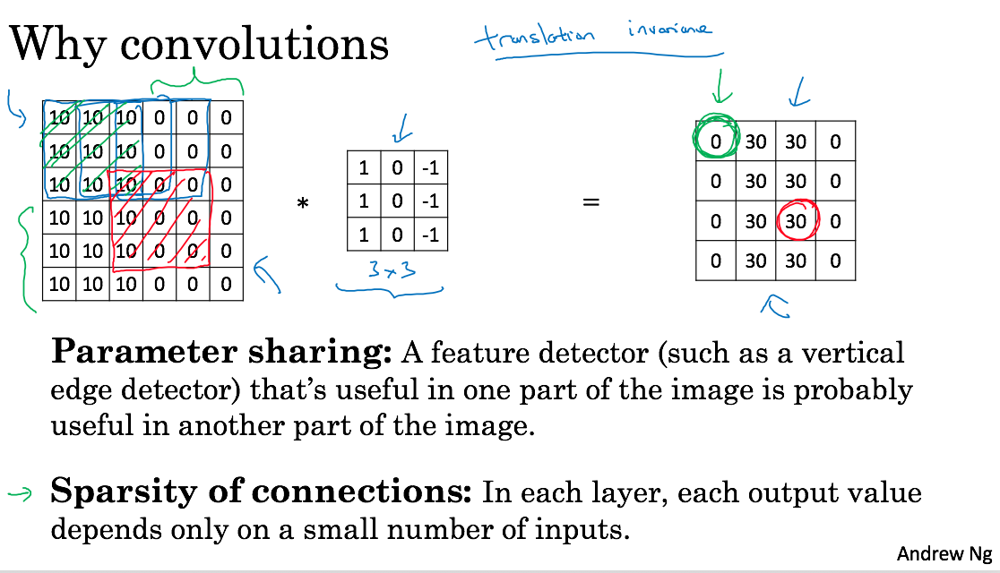
通常来说，随着层数增加，H,W不断减小，而C不断增加。(C可以认为是feature detectors的数量）
2 几种经典的CNN实现
我就直接照抄ppt了，可以认为这几种实现上没有更多概念的引入（相比后面的resnet和inception).
lenet-5解决当时手写数字识别问题。当时我看论文的时候也截了个图，可以对比一下Andrew Ng给的图和论文里面的图。看上去好像差不多。一共大约60k个参数。
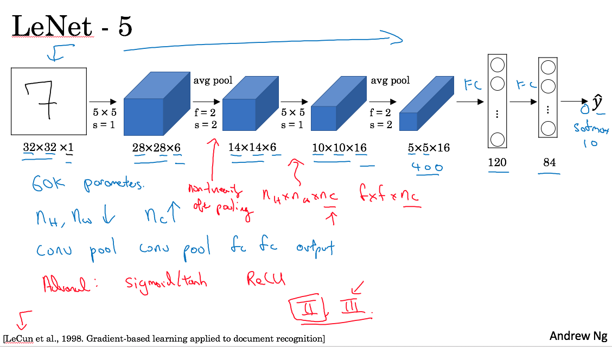 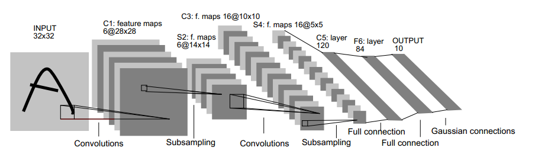
alexnet则是在2012年imagenet比赛中，geoff hinton团队实现的CNN。和lenet-5没有什么本质区别，只不过更大了，然后用了relu, multiple GPUs（因为GPU内存很小），local response normalization(lrn)技术。参数大约有60m个，是lenet-5的1000倍。
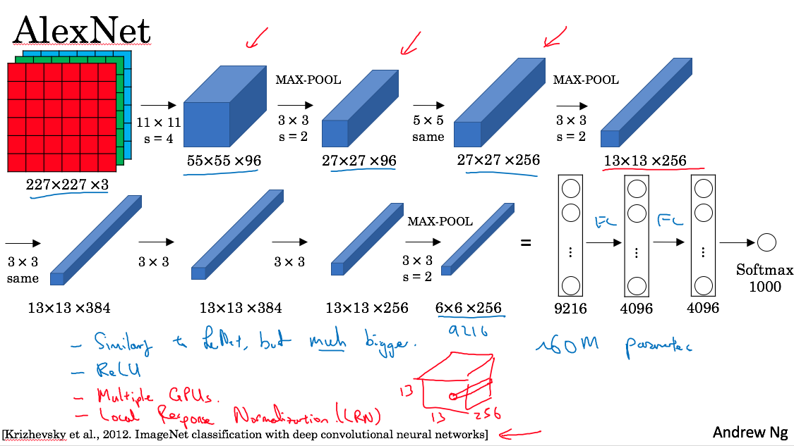
alexnet使用了很多比较奇怪的参数和结构，vgg则尝试是否可以使用简单的配置但是更加大的网络，来获得更好的效果呢？vgg里统一采用(3,3)的filter, 然后都是(2,2)的max-pool，结构上比较规整。vgg-16有138M个参数，vgg-19则有更多的参数。
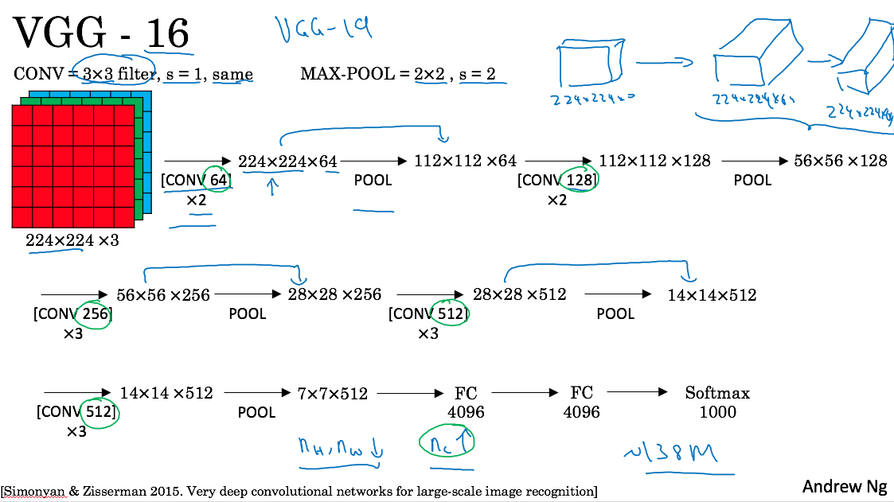
3 Residual Network
残差网络，大意是经过几个layer之后，将原始输入叠加上去。残差网络是由多个residual block组成的
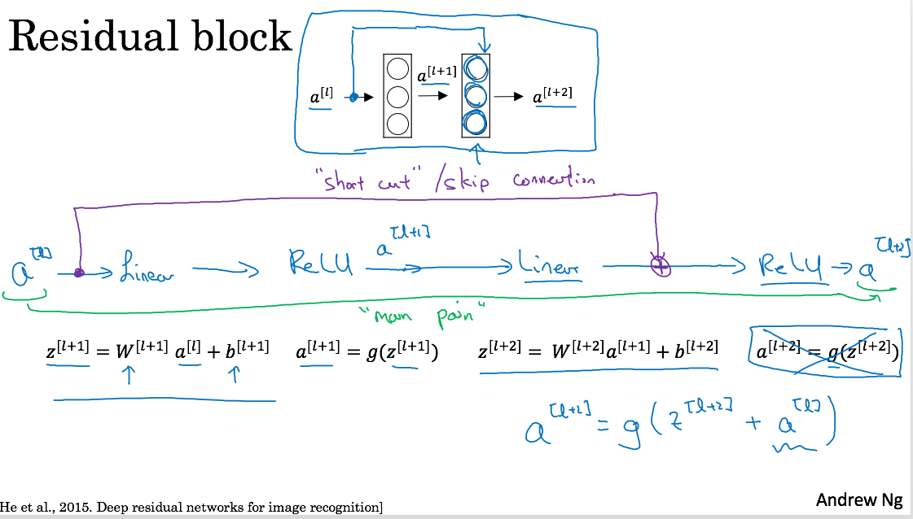
将原始输入叠加进去，可以成为一个skip connection. 有了这些residual block之后，就可以将这些Blocks组合起来做成一个residual network.
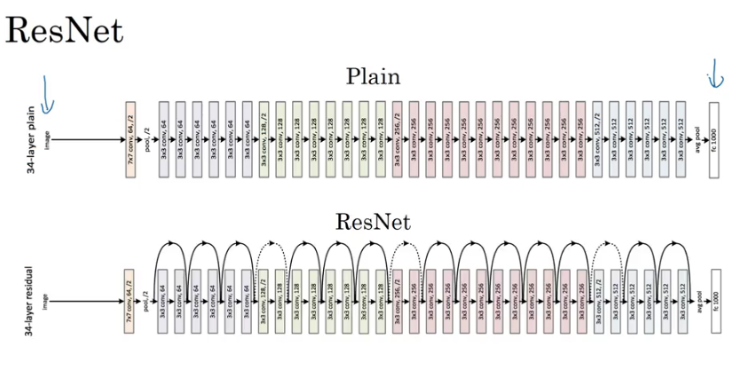
resnet可以更好地训练更深的神经网络，一个很重要的原因就是因为res block可以很容易地学到identity mapping以及梯度消失。下面slide说明了为什么更容易学到id mapping. 如果w,b~=0并且g是relu函数的话，那么a[l+2] ~= g(a[l]) = a[l]
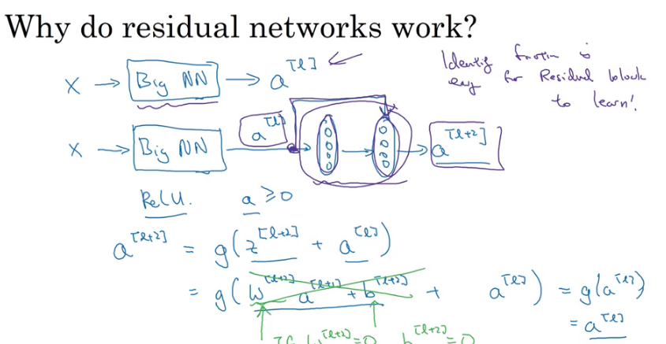
4 Inception Network
Inception network是google搞出来的，出发点很简单，就是我自己也不确定filter size是什么值比较合适，所以干脆把1, 3, 5, 都试试，然后放在一起作为output. 下图
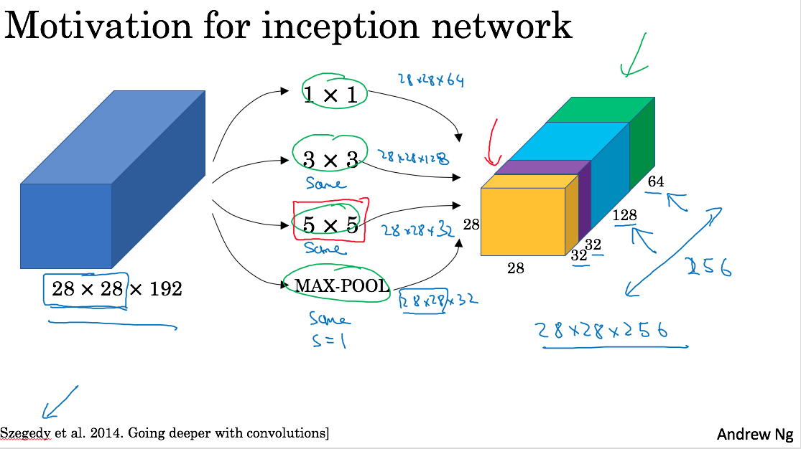
里面用到了1x1的filter. 1x1的filter意义不大，apply下去之后h,w都不变，只有c会改变。这个filter有一个特别的用途，就是减少conv的计算量。看看下面两个图
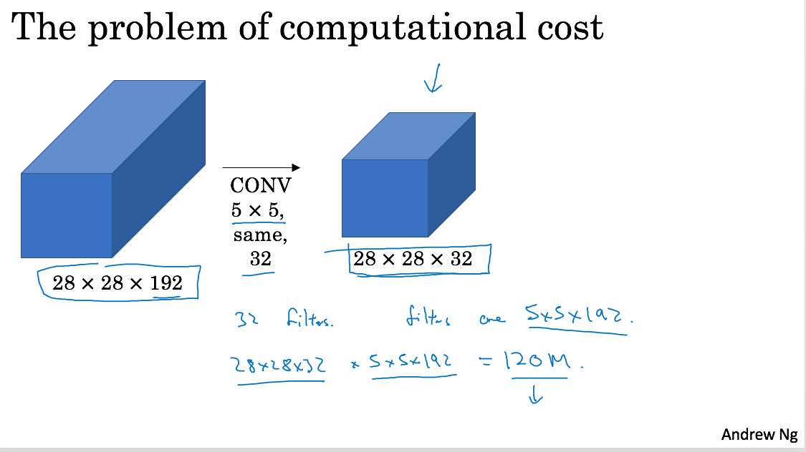 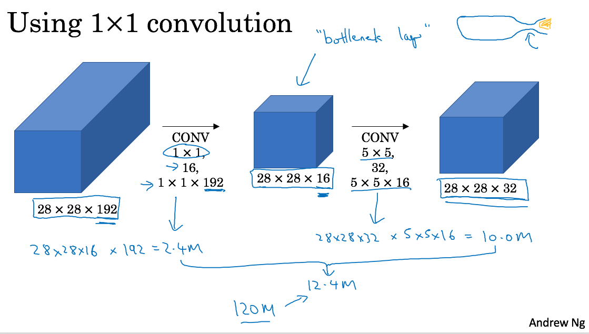
- 第一个计算量是 (5 * 5 * 192) * (28 * 28 * 32) ~= 120M
- 第二个计算量通过1x1 conv间接地得到
- stage1 192 * (28 * 28 * 16) ~= 2.4M
- stage2 (5 * 5 * 16) * (28 * 28 * 32) ~= 10M
- 一共大约12.4M
- 我在纸上推导了一下好像是可以这么计算，前提是必须通过1x1的conv
如果1x1 conv可以帮助3x3 conv, 5x5 cov的话，所以最终一个inception block就是下面这样
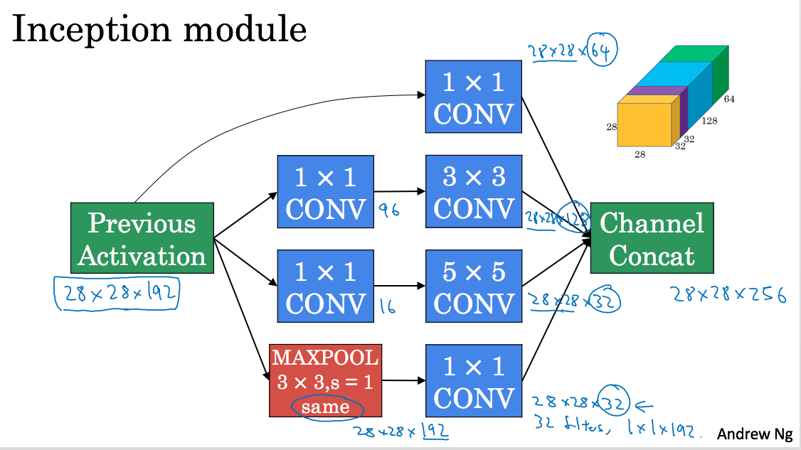
然后将这些block组织起来就是下面这样的inception network. Andrew在slide上面标注每个inception bock. 这个inception network又称为googLeNet, 最后面和lenet一样，也是为了致敬lenet吧。
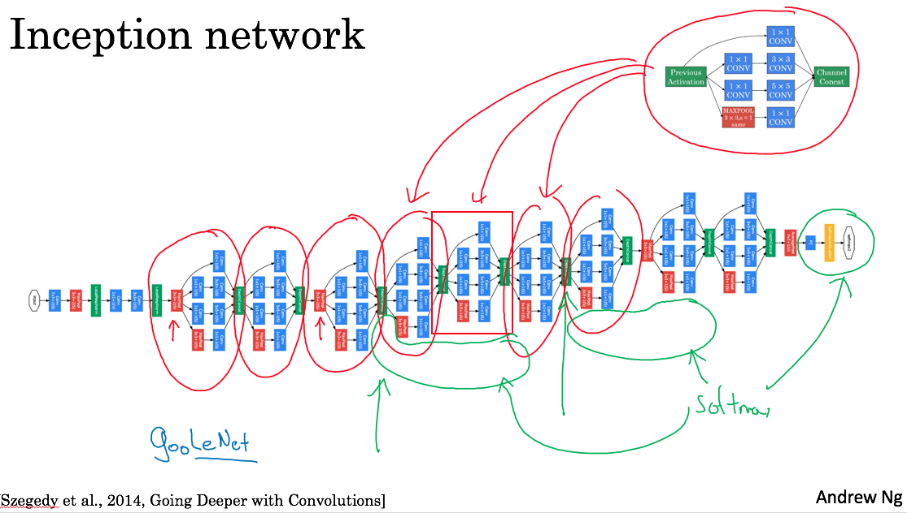
至于为什么叫做inception network, 完全是因为盗梦空间(Inception)这部电影。电影里面小李子有句台词 "we need to go deeper"
5 Practical Advices
Data Augmentation在图像上可以适度使用，包括下面几种方法：
- mirroring 镜像操作
- cropping 裁剪操作
- color shifting RGB偏移操作
这些方法对CNN学习有帮助，一些方法比如rotate等对CNN则并不起什么作用。
比赛时一定要使用ensemble, 并且在predict阶段可以对test input进行multi crop, 裁剪出多份图像分别进行预测，然后将结果综合。不过这些技巧在实践中不太使用，对性能是会有影响的。
6 物体检测
TODO:
7 脸部识别
TODO:
8 风格迁移
TODO: